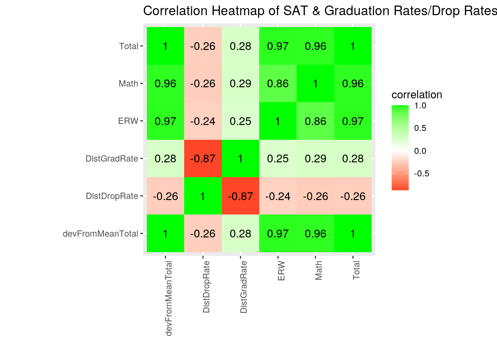
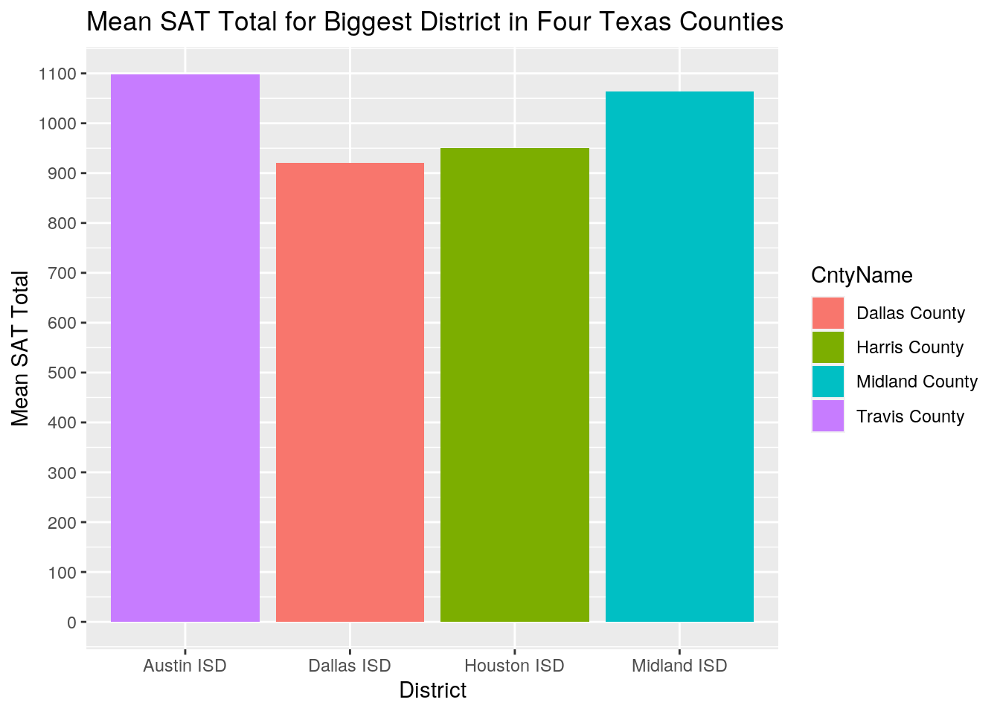
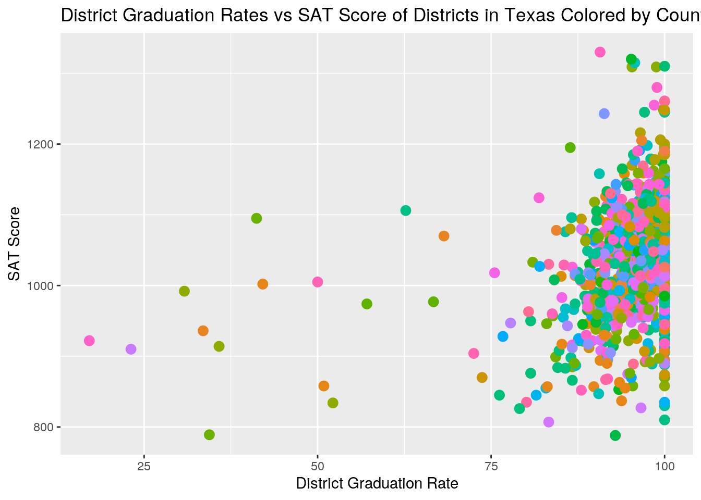
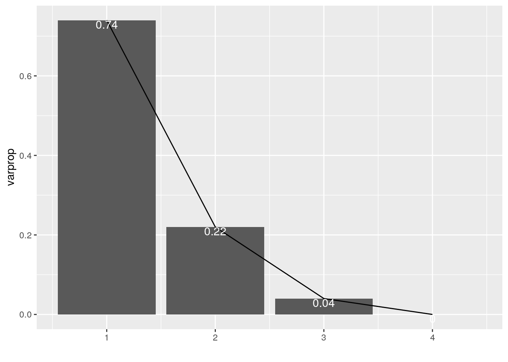
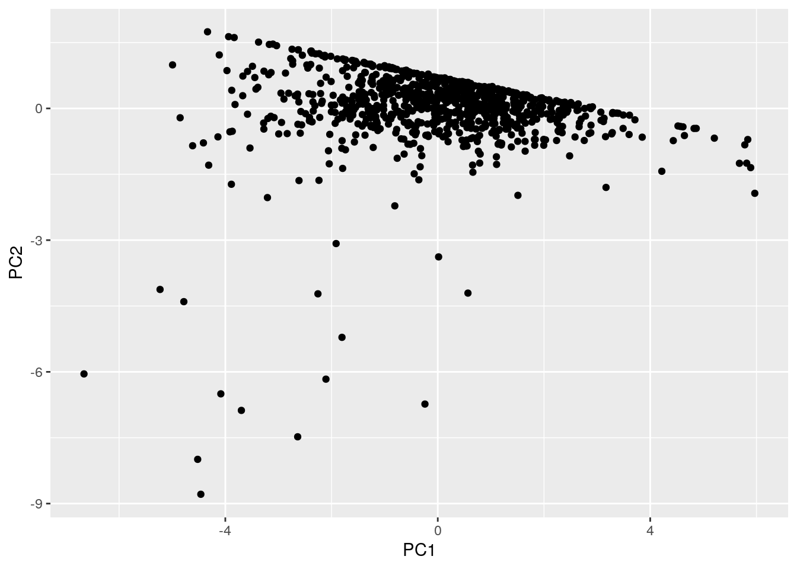
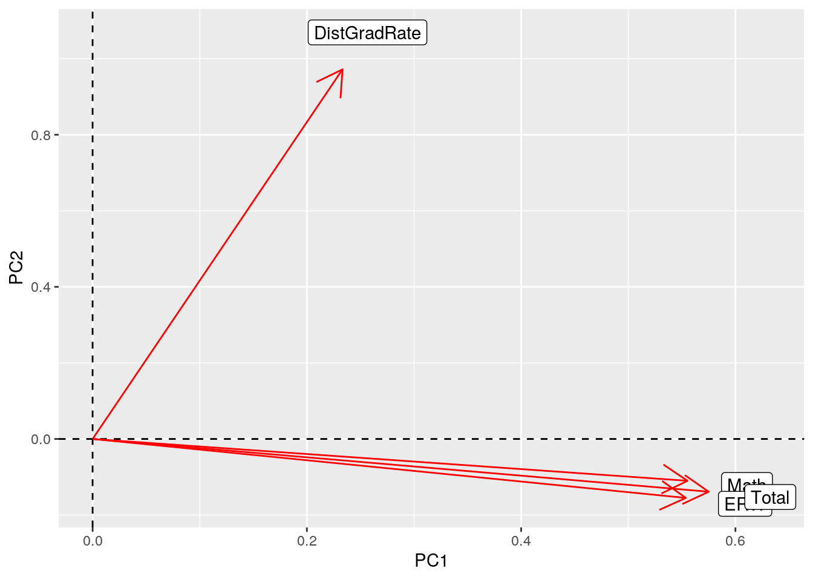

For this project, I decided to look into mean SAT scores and graduation rates of all school districts in the state of Texas. I felt like there must be some sort of correlation between a district’s SAT score and their graduation rates. I tried to find data sets already in R but none of them really interested me. I happened upon the Texas Education Agency website and found that they had this data by graduation year. So, I decided to look at specifically 2017 data as that was the year that I graduated from high school.
library(ggplot2)
library(tidyverse)
sat_data2017_all <- read.csv("sat_district_data_class_2017.csv")
gradRate_data2017_all <- read.csv("District_Data_Download_4yr_2017.csv")
head(sat_data2017_all)## Group District DistName County CntyName Region RegnName
## 1 All Students =001902 Cayuga ISD =001 Anderson County =07 Kilgore
## 2 African American =001902 Cayuga ISD =001 Anderson County =07 Kilgore
## 3 American Indian =001902 Cayuga ISD =001 Anderson County =07 Kilgore
## 4 Asian =001902 Cayuga ISD =001 Anderson County =07 Kilgore
## 5 Hispanic =001902 Cayuga ISD =001 Anderson County =07 Kilgore
## 6 Pacific Islander =001902 Cayuga ISD =001 Anderson County =07 Kilgore
## ERW Math Total Grads_Mskd Exnees_Mskd Part_Rate Crit_Mskd Above_Crit_Rate
## 1 519 505 1024 <50 <25 =36.7 <25 =11.1
## 2 465 455 920 <25 <25 =66.7 <25
## 3 NA NA NA <25 <25 <25
## 4 NA NA NA <25 <25 <25
## 5 NA NA NA <25 <25 =100 <25
## 6 NA NA NA <25 <25 <25head(gradRate_data2017_all)## CALC_FOR_STATE_ACCT DISTRICT DISTNAME COUNTY CNTYNAME REGION REGNNAME
## DIST_ALLD DIST_ALLN_CMP2 DIST_ALLN_GRAD DIST_ALLN_CONT DIST_ALLN_TXCHSE
## DIST_ALLN_DROP DIST_ALLR_CMP2 DIST_ALLR_GRAD DIST_ALLR_CONT
## DIST_ALLR_TXCHSE DIST_ALLR_DROP DIST_ALLR_RAED DIST_ALLR_RECADV DIST_AAD
## DIST_AAN_CMP2 DIST_AAN_GRAD DIST_AAN_CONT DIST_AAN_TXCHSE DIST_AAN_DROP
## DIST_AAR_CMP2 DIST_AAR_GRAD DIST_AAR_CONT DIST_AAR_TXCHSE DIST_AAR_DROP
## DIST_AAR_RAED DIST_AAR_RECADV DIST_ASD DIST_ASN_CMP2 DIST_ASN_GRAD
## DIST_ASN_CONT DIST_ASN_TXCHSE DIST_ASN_DROP DIST_ASR_CMP2 DIST_ASR_GRAD
## DIST_ASR_CONT DIST_ASR_TXCHSE DIST_ASR_DROP DIST_ASR_RAED DIST_ASR_RECADV
## DIST_HSD DIST_HSN_CMP2 DIST_HSN_GRAD DIST_HSN_CONT DIST_HSN_TXCHSE
## DIST_HSN_DROP DIST_HSR_CMP2 DIST_HSR_GRAD DIST_HSR_CONT DIST_HSR_TXCHSE
## DIST_HSR_DROP DIST_HSR_RAED DIST_HSR_RECADV DIST_MUD DIST_MUN_CMP2
## DIST_MUN_GRAD DIST_MUN_CONT DIST_MUN_TXCHSE DIST_MUN_DROP DIST_MUR_CMP2
## DIST_MUR_GRAD DIST_MUR_CONT DIST_MUR_TXCHSE DIST_MUR_DROP DIST_MUR_RAED
## DIST_MUR_RECADV DIST_NAD DIST_NAN_CMP2 DIST_NAN_GRAD DIST_NAN_CONT
## DIST_NAN_TXCHSE DIST_NAN_DROP DIST_NAR_CMP2 DIST_NAR_GRAD DIST_NAR_CONT
## DIST_NAR_TXCHSE DIST_NAR_DROP DIST_NAR_RAED DIST_NAR_RECADV DIST_PID
## DIST_PIN_CMP2 DIST_PIN_GRAD DIST_PIN_CONT DIST_PIN_TXCHSE DIST_PIN_DROP
## DIST_PIR_CMP2 DIST_PIR_GRAD DIST_PIR_CONT DIST_PIR_TXCHSE DIST_PIR_DROP
## DIST_PIR_RAED DIST_PIR_RECADV DIST_WHD DIST_WHN_CMP2 DIST_WHN_GRAD
## DIST_WHN_CONT DIST_WHN_TXCHSE DIST_WHN_DROP DIST_WHR_CMP2 DIST_WHR_GRAD
## DIST_WHR_CONT DIST_WHR_TXCHSE DIST_WHR_DROP DIST_WHR_RAED DIST_WHR_RECADV
## DIST_ECND DIST_ECNN_CMP2 DIST_ECNN_GRAD DIST_ECNN_CONT DIST_ECNN_TXCHSE
## DIST_ECNN_DROP DIST_ECNR_CMP2 DIST_ECNR_GRAD DIST_ECNR_CONT
## DIST_ECNR_TXCHSE DIST_ECNR_DROP DIST_ECNR_RAED DIST_ECNR_RECADV DIST_NECND
## DIST_NECNN_CMP2 DIST_NECNN_GRAD DIST_NECNN_CONT DIST_NECNN_TXCHSE
## DIST_NECNN_DROP DIST_NECNR_CMP2 DIST_NECNR_GRAD DIST_NECNR_CONT
## DIST_NECNR_TXCHSE DIST_NECNR_DROP DIST_NECNR_RAED DIST_NECNR_RECADV
## DIST_FEMD DIST_FEMN_CMP2 DIST_FEMN_GRAD DIST_FEMN_CONT DIST_FEMN_TXCHSE
## DIST_FEMN_DROP DIST_FEMR_CMP2 DIST_FEMR_GRAD DIST_FEMR_CONT
## DIST_FEMR_TXCHSE DIST_FEMR_DROP DIST_FEMR_RAED DIST_FEMR_RECADV DIST_MALD
## DIST_MALN_CMP2 DIST_MALN_GRAD DIST_MALN_CONT DIST_MALN_TXCHSE
## DIST_MALN_DROP DIST_MALR_CMP2 DIST_MALR_GRAD DIST_MALR_CONT
## DIST_MALR_TXCHSE DIST_MALR_DROP DIST_MALR_RAED DIST_MALR_RECADV DIST_ATRD
## DIST_ATRN_CMP2 DIST_ATRN_GRAD DIST_ATRN_CONT DIST_ATRN_TXCHSE
## DIST_ATRN_DROP DIST_ATRR_CMP2 DIST_ATRR_GRAD DIST_ATRR_CONT
## DIST_ATRR_TXCHSE DIST_ATRR_DROP DIST_ATRR_RAED DIST_ATRR_RECADV DIST_BED
## DIST_BEN_CMP2 DIST_BEN_GRAD DIST_BEN_CONT DIST_BEN_TXCHSE DIST_BEN_DROP
## DIST_BER_CMP2 DIST_BER_GRAD DIST_BER_CONT DIST_BER_TXCHSE DIST_BER_DROP
## DIST_BER_RAED DIST_BER_RECADV DIST_CTED DIST_CTEN_CMP2 DIST_CTEN_GRAD
## DIST_CTEN_CONT DIST_CTEN_TXCHSE DIST_CTEN_DROP DIST_CTER_CMP2
## DIST_CTER_GRAD DIST_CTER_CONT DIST_CTER_TXCHSE DIST_CTER_DROP
## DIST_CTER_RAED DIST_CTER_RECADV DIST_VFOSD DIST_VFOSN_CMP2 DIST_VFOSN_GRAD
## DIST_VFOSN_CONT DIST_VFOSN_TXCHSE DIST_VFOSN_DROP DIST_VFOSR_CMP2
## DIST_VFOSR_GRAD DIST_VFOSR_CONT DIST_VFOSR_TXCHSE DIST_VFOSR_DROP
## DIST_VFOSR_RAED DIST_VFOSR_RECADV DIST_FOSD DIST_FOSN_CMP2 DIST_FOSN_GRAD
## DIST_FOSN_CONT DIST_FOSN_TXCHSE DIST_FOSN_DROP DIST_FOSR_CMP2
## DIST_FOSR_GRAD DIST_FOSR_CONT DIST_FOSR_TXCHSE DIST_FOSR_DROP
## DIST_FOSR_RAED DIST_FOSR_RECADV DIST_GFTD DIST_GFTN_CMP2 DIST_GFTN_GRAD
## DIST_GFTN_CONT DIST_GFTN_TXCHSE DIST_GFTN_DROP DIST_GFTR_CMP2
## DIST_GFTR_GRAD DIST_GFTR_CONT DIST_GFTR_TXCHSE DIST_GFTR_DROP
## DIST_GFTR_RAED DIST_GFTR_RECADV DIST_VHLD DIST_VHLN_CMP2 DIST_VHLN_GRAD
## DIST_VHLN_CONT DIST_VHLN_TXCHSE DIST_VHLN_DROP DIST_VHLR_CMP2
## DIST_VHLR_GRAD DIST_VHLR_CONT DIST_VHLR_TXCHSE DIST_VHLR_DROP
## DIST_VHLR_RAED DIST_VHLR_RECADV DIST_IMMD DIST_IMMN_CMP2 DIST_IMMN_GRAD
## DIST_IMMN_CONT DIST_IMMN_TXCHSE DIST_IMMN_DROP DIST_IMMR_CMP2
## DIST_IMMR_GRAD DIST_IMMR_CONT DIST_IMMR_TXCHSE DIST_IMMR_DROP
## DIST_IMMR_RAED DIST_IMMR_RECADV DIST_LEPHSD DIST_LEPHSN_CMP2
## DIST_LEPHSN_GRAD DIST_LEPHSN_CONT DIST_LEPHSN_TXCHSE DIST_LEPHSN_DROP
## DIST_LEPHSR_CMP2 DIST_LEPHSR_GRAD DIST_LEPHSR_CONT DIST_LEPHSR_TXCHSE
## DIST_LEPHSR_DROP DIST_LEPHSR_RAED DIST_LEPHSR_RECADV DIST_LEPD
## DIST_LEPN_CMP2 DIST_LEPN_GRAD DIST_LEPN_CONT DIST_LEPN_TXCHSE
## DIST_LEPN_DROP DIST_LEPR_CMP2 DIST_LEPR_GRAD DIST_LEPR_CONT
## DIST_LEPR_TXCHSE DIST_LEPR_DROP DIST_LEPR_RAED DIST_LEPR_RECADV DIST_MIGD
## DIST_MIGN_CMP2 DIST_MIGN_GRAD DIST_MIGN_CONT DIST_MIGN_TXCHSE
## DIST_MIGN_DROP DIST_MIGR_CMP2 DIST_MIGR_GRAD DIST_MIGR_CONT
## DIST_MIGR_TXCHSE DIST_MIGR_DROP DIST_MIGR_RAED DIST_MIGR_RECADV DIST_MILD
## DIST_MILN_CMP2 DIST_MILN_GRAD DIST_MILN_CONT DIST_MILN_TXCHSE
## DIST_MILN_DROP DIST_MILR_CMP2 DIST_MILR_GRAD DIST_MILR_CONT
## DIST_MILR_TXCHSE DIST_MILR_DROP DIST_MILR_RAED DIST_MILR_RECADV DIST_SPED
## DIST_SPEN_CMP2 DIST_SPEN_GRAD DIST_SPEN_CONT DIST_SPEN_TXCHSE
## DIST_SPEN_DROP DIST_SPER_CMP2 DIST_SPER_GRAD DIST_SPER_CONT
## DIST_SPER_TXCHSE DIST_SPER_DROP DIST_SPER_RAED DIST_SPER_RECADV DIST_TTLD
## DIST_TTLN_CMP2 DIST_TTLN_GRAD DIST_TTLN_CONT DIST_TTLN_TXCHSE
## DIST_TTLN_DROP DIST_TTLR_CMP2 DIST_TTLR_GRAD DIST_TTLR_CONT
## DIST_TTLR_TXCHSE DIST_TTLR_DROP DIST_TTLR_RAED DIST_TTLR_RECADV DIST_EXCL
## [ reached 'max' / getOption("max.print") -- omitted 6 rows ]sat_data <- sat_data2017_all %>% filter(Group == "All Students") %>%
select(DistName, CntyName, ERW, Math, Total) %>% glimpse()## Rows: 978
## Columns: 5
## $ DistName <fct> Cayuga ISD, Elkhart ISD, Frankston ISD, Neches ISD, Palestin…
## $ CntyName <fct> Anderson County, Anderson County, Anderson County, Anderson …
## $ ERW <int> 519, 530, 541, 604, 511, 509, 521, 516, 539, 543, 471, 520, …
## $ Math <int> 505, 500, 539, 540, 511, 488, 493, 494, 505, 548, 480, 518, …
## $ Total <int> 1024, 1029, 1079, 1144, 1021, 997, 1014, 1010, 1044, 1091, 9…gradRate_data <- gradRate_data2017_all %>% filter(CALC_FOR_STATE_ACCT ==
"Yes") %>% select(DISTNAME, DIST_ALLR_GRAD, DIST_ALLR_DROP,
DistName = DISTNAME, DistGradRate = DIST_ALLR_GRAD, DistDropRate = DIST_ALLR_DROP) %>%
glimpse()## Rows: 1,054
## Columns: 3
## $ DistName <fct> Cayuga ISD, Elkhart ISD, Frankston ISD, Neches ISD, Pale…
## $ DistGradRate <dbl> 95.7, 97.8, 100.0, 100.0, 95.9, 97.0, 100.0, 95.8, 100.0…
## $ DistDropRate <dbl> 2.1, 1.1, 0.0, 0.0, 0.9, 0.0, 0.0, 2.9, 0.0, 1.8, 7.0, 1…Each data set had entirely too much information that was not needed for my analysis. The SAT score set had scores divided up into ethnicities and gender. So I just used the mean math, reading, and total scores of all students. The graduation data set had the school’s region, district number, and other observations. Therefore, I decided to only use the district’s name, graduation rate, and drop rate. I also included the county names from the data sets to give me a visual of where in the state these districts were located.
complete_data <- full_join(sat_data, gradRate_data, by = "DistName")
glimpse(complete_data)## Rows: 1,095
## Columns: 7
## $ DistName <fct> Cayuga ISD, Elkhart ISD, Frankston ISD, Neches ISD, Pale…
## $ CntyName <fct> Anderson County, Anderson County, Anderson County, Ander…
## $ ERW <int> 519, 530, 541, 604, 511, 509, 521, 516, 539, 543, 471, 5…
## $ Math <int> 505, 500, 539, 540, 511, 488, 493, 494, 505, 548, 480, 5…
## $ Total <int> 1024, 1029, 1079, 1144, 1021, 997, 1014, 1010, 1044, 109…
## $ DistGradRate <dbl> 95.7, 97.8, 100.0, 100.0, 95.9, 97.0, 100.0, 95.8, 100.0…
## $ DistDropRate <dbl> 2.1, 1.1, 0.0, 0.0, 0.9, 0.0, 0.0, 2.9, 0.0, 1.8, 7.0, 1…complete_data <- complete_data %>% na.omit() %>% arrange(DistName)
summary(complete_data)## DistName CntyName ERW Math
## Big Sandy ISD : 4 Harris County : 31 Min. :360.0 Min. :380.0
## Centerville ISD : 4 Bexar County : 28 1st Qu.:495.0 1st Qu.:483.8
## Chapel Hill ISD : 4 Dallas County : 26 Median :523.0 Median :509.0
## Edgewood ISD : 4 McLennan County: 20 Mean :521.8 Mean :509.1
## Highland Park ISD: 4 Tarrant County : 20 3rd Qu.:548.0 3rd Qu.:534.0
## Midway ISD : 4 Collin County : 15 Max. :690.0 Max. :656.0
## (Other) :896 (Other) :780
## Total DistGradRate DistDropRate
## Min. : 788 Min. : 17.10 Min. : 0.000
## 1st Qu.: 980 1st Qu.: 92.60 1st Qu.: 0.000
## Median :1032 Median : 96.20 Median : 1.800
## Mean :1031 Mean : 94.52 Mean : 3.162
## 3rd Qu.:1080 3rd Qu.: 99.03 3rd Qu.: 4.400
## Max. :1330 Max. :100.00 Max. :68.300
## glimpse(complete_data)## Rows: 920
## Columns: 7
## $ DistName <fct> A+ Academy, Abbott ISD, Abernathy ISD, Abilene ISD, Acad…
## $ CntyName <fct> Dallas County, Hill County, Hale County, Taylor County, …
## $ ERW <int> 441, 643, 550, 536, 535, 550, 467, 581, 511, 541, 436, 5…
## $ Math <int> 452, 603, 537, 522, 527, 465, 469, 577, 500, 496, 441, 5…
## $ Total <int> 892, 1245, 1088, 1058, 1062, 1015, 936, 1159, 1011, 1037…
## $ DistGradRate <dbl> 97.2, 100.0, 96.9, 94.4, 94.8, 100.0, 93.1, 96.9, 98.3, …
## $ DistDropRate <dbl> 0.0, 0.0, 1.6, 2.2, 5.2, 0.0, 3.4, 0.7, 1.7, 0.0, 15.0, …Because I would be joining the two data sets by district names and county names, I decided to do a full join. After joining the two data sets, I omitted the lines where there was data missing. Some schools did not have subscores posted on this data sheet for whatever reason. I felt that it would be easier to analyze my data without having to worry about incomplete observations.
devFromMeanTotal <- function(Total) {
Total - mean(complete_data$Total)
}
complete_data <- complete_data %>% mutate(devFromMeanTotal = devFromMeanTotal(Total))
glimpse(complete_data)## Rows: 920
## Columns: 8
## $ DistName <fct> A+ Academy, Abbott ISD, Abernathy ISD, Abilene ISD, …
## $ CntyName <fct> Dallas County, Hill County, Hale County, Taylor Coun…
## $ ERW <int> 441, 643, 550, 536, 535, 550, 467, 581, 511, 541, 43…
## $ Math <int> 452, 603, 537, 522, 527, 465, 469, 577, 500, 496, 44…
## $ Total <int> 892, 1245, 1088, 1058, 1062, 1015, 936, 1159, 1011, …
## $ DistGradRate <dbl> 97.2, 100.0, 96.9, 94.4, 94.8, 100.0, 93.1, 96.9, 98…
## $ DistDropRate <dbl> 0.0, 0.0, 1.6, 2.2, 5.2, 0.0, 3.4, 0.7, 1.7, 0.0, 15…
## $ devFromMeanTotal <dbl> -138.92282609, 214.07717391, 57.07717391, 27.0771739…Next, I mutated my dataset and created a new variable called devFromMeanTotal. This showed the difference between a district’s mean SAT score and SAT score average of all school districts. A negative value meant that their score was below the average while a positive value meant that they were above the average.
mean(complete_data$Total)## [1] 1030.923complete_data %>% group_by(CntyName) %>% summarize(mean_SAT = mean(Total,
na.rm = T))## # A tibble: 228 x 2
## CntyName mean_SAT
## <fct> <dbl>
## 1 Anderson County 1044
## 2 Andrews County 1010
## 3 Angelina County 1028.
## 4 Aransas County 1031
## 5 Archer County 1109.
## 6 Armstrong County 917
## 7 Atascosa County 974.
## 8 Austin County 1039
## 9 Bailey County 1190
## 10 Bandera County 1040
## # … with 218 more rowscomplete_stats <- complete_data %>% summarize_at(3:8, .funs = list(Mean = mean,
StDev = sd, Var. = var, Max = max, Min = min, N_Distinct = n_distinct,
Length = length, IQR = IQR, Median = median))
grouped_stats <- complete_data %>% group_by(CntyName) %>% summarize_at(3:7,
.funs = list(Mean = mean, StDev = sd, Var. = var, Max = max,
Min = min, N_Distinct = n_distinct, Length = length,
Median = median))
tidy_stats <- complete_stats %>% pivot_longer(contains("_"),
names_to = "name", values_to = "value") %>% separate(name,
c("name", "function"), sep = "_") %>% pivot_wider(names_from = "function",
values_from = "value")
glimpse(tidy_stats)## Rows: 6
## Columns: 10
## $ name <chr> "ERW", "Math", "Total", "DistGradRate", "DistDropRate", "devFr…
## $ Mean <dbl> 5.218207e+02, 5.091337e+02, 1.030923e+03, 9.452098e+01, 3.1616…
## $ StDev <dbl> 42.913576, 40.806406, 80.810728, 8.083564, 5.171020, 80.810728
## $ Var. <dbl> 1841.57498, 1665.16274, 6530.37380, 65.34401, 26.73945, 6530.3…
## $ Max <dbl> 690.0000, 656.0000, 1330.0000, 100.0000, 68.3000, 299.0772
## $ Min <dbl> 360.0000, 380.0000, 788.0000, 17.1000, 0.0000, -242.9228
## $ N <dbl> 193, 184, 296, 175, 131, 296
## $ Length <dbl> 920, 920, 920, 920, 920, 920
## $ IQR <dbl> 53.000, 50.250, 100.000, 6.425, 4.400, 100.000
## $ Median <dbl> 523.000000, 509.000000, 1032.500000, 96.200000, 1.800000, 1.57…After that, I ran summary statistics on my data. I ran mean, standard deviation, variance, max, min, n_distinct, length, IQR, and median. I ran them on the normal data and also my data grouped by county name. I then tidied up the stats table because it gave me a lot of variables with only one observation, so it was very hard to read. I was able to condense the table into observations in 10 columns. I found really shocking that the graduation rates ranged from 100% all the way down to 17.1%. Inversely, I also thought it was crazy that there is a school district in Texas that has a student drop rate of 68.3%! This stats table was able to give me a lot of interesting information quickly.
numerical_data <- complete_data %>% na.omit %>% select("ERW",
"Math", "Total", "DistGradRate", "DistDropRate", "devFromMeanTotal")
cor_data <- cor(numerical_data)
tidy_cor <- cor(numerical_data) %>% as.data.frame %>% rownames_to_column %>%
pivot_longer(-1, names_to = "columns", values_to = "correlation")
head(tidy_cor)## # A tibble: 6 x 3
## rowname columns correlation
## <chr> <chr> <dbl>
## 1 ERW ERW 1
## 2 ERW Math 0.859
## 3 ERW Total 0.967
## 4 ERW DistGradRate 0.253
## 5 ERW DistDropRate -0.235
## 6 ERW devFromMeanTotal 0.967tidy_cor %>% ggplot(aes(rowname, columns, fill = correlation)) +
geom_tile() + geom_text(aes(label = round(correlation, 2)),
color = "black", size = 4) + scale_fill_gradient2(low = "red",
mid = "white", high = "green") + ggtitle("Correlation Heatmap of SAT & Graduation Rates/Drop Rates") +
xlab("") + ylab("") + coord_fixed() + theme(axis.text.x = element_text(angle = 90,
hjust = 1))
focused_districts <- complete_data %>% filter(DistName %in% c("Dallas ISD",
"Houston ISD", "Austin ISD", "Midland ISD")) %>% select(DistName,
CntyName, Math, ERW, Total)
ggplot(focused_districts, aes(x = DistName, fill = CntyName)) +
geom_bar(aes(y = Total), stat = "summary", fun.y = "mean") +
scale_y_continuous(breaks = seq(0, 1600, 100)) + xlab("District") +
ylab("Mean SAT Total") + ggtitle("Mean SAT Total for Biggest District in Four Texas Counties")
ggplot(data = complete_data, aes(x = DistGradRate, y = Total,
color = CntyName)) + geom_point(size = 3) + ggtitle("District Graduation Rates vs SAT Score of Districts in Texas Colored by County") +
xlab("District Graduation Rate") + ylab("SAT Score") + theme(legend.position = "none") After creating my correlation heatmap, I found that the district graduation rate had very little correlation with the math and English subscores or the SAT total score. The highest value between those was 0.29. The English subscore and the total score had the highest correlation at 0.97, which I expected.
For the bar chart, I focused on the 4 biggest school districts in 4 specific counties. The first two counties are the biggest counties in Texas: Harris county and Dallas county. The next county was Travis county, for obvious reasons. And the final county was my home county: Midland county. I found that the two biggest counties, Dallas and Harris, actually had the lowest SAT score averages. I think that this may be because the sheer size of the population can tend to bring the average down. I did expect Austin ISD to have a higher SAT score, but I did not expect my own Midland ISD to be right behind it.
For my scatterplot, I plotted graduation rates versus SAT scores by district. I also colored them by county. Just from looking at it, there does not appear to be any sort of correlation between the two numerical variables. I didn’t bother including a legend because the points are too jumbled up. So far, I am very disappointed with the relationship between district graduation rates and district SAT scores.
complete_data_1 <- complete_data %>% select(DistName, DistGradRate,
Math, ERW, Total)
num_data <- complete_data_1 %>% select_if(is.numeric) %>% scale
pca_data <- princomp(num_data)
names(pca_data)## [1] "sdev" "loadings" "center" "scale" "n.obs" "scores" "call"summary(pca_data, loadings = T)## Importance of components:
## Comp.1 Comp.2 Comp.3 Comp.4
## Standard deviation 1.7230177 0.9414508 0.37460110 1.43752e-02
## Proportion of Variance 0.7430051 0.2218235 0.03511967 5.17178e-05
## Cumulative Proportion 0.7430051 0.9648286 0.99994828 1.00000e+00
##
## Loadings:
## Comp.1 Comp.2 Comp.3 Comp.4
## DistGradRate 0.233 0.972
## Math 0.555 -0.110 -0.720 -0.401
## ERW 0.554 -0.155 0.693 -0.435
## Total 0.575 -0.139 0.806eigen_value <- pca_data$sdev^2
varprop = round(eigen_value/sum(eigen_value), 2)
ggplot() + geom_bar(aes(y = varprop, x = 1:4), stat = "identity") +
geom_path(aes(y = varprop, x = 1:4)) + geom_text(aes(x = 1:4,
y = varprop, label = round(varprop, 3)), col = "white", vjust = 1,
size = 4) + xlab("") + scale_x_continuous(breaks = 1:4) +
scale_y_continuous(breaks = seq(0, 0.8, 0.2))
eigen(cor(num_data))## eigen() decomposition
## $values
## [1] 2.9720204706 0.8872939795 0.1404786786 0.0002068712
##
## $vectors
## [,1] [,2] [,3] [,4]
## [1,] -0.2332637 0.9719122 -0.0312206 0.0002841228
## [2,] -0.5552815 -0.1100219 0.7200815 -0.4012981678
## [3,] -0.5536987 -0.1550250 -0.6930161 -0.4348719253
## [4,] -0.5750376 -0.1387415 -0.0153784 0.8061303297data_frame <- data.frame(PC1 = pca_data$scores[, 1], PC2 = pca_data$scores[,
2])
ggplot(data_frame, aes(PC1, PC2)) + geom_point()
District <- complete_data$DistName
# Highest PC1
pca_data$scores %>% as.data.frame %>% cbind(District, .) %>%
top_n(3, Comp.1)## District Comp.1 Comp.2 Comp.3 Comp.4
## 1 Ore City ISD 5.968679 -1.9332719 0.4488001 -0.007917656
## 2 Quanah ISD 5.836675 -0.7085166 0.1579306 -0.004428140
## 3 Seagraves ISD 5.891298 -1.3480923 0.6407400 -0.009172895# Lowest PC1
pca_data$scores %>% as.data.frame %>% cbind(District, .) %>%
top_n(3, wt = desc(Comp.1))## District Comp.1 Comp.2 Comp.3
## 1 Paso Del Norte Academy Charter Dis -6.660809 -6.0464544 -0.22700735
## 2 Texans Can Academies -5.228704 -4.1232186 -0.26787098
## 3 Waelder ISD -4.993425 0.9915963 0.01638923
## Comp.4
## 1 0.001383685
## 2 0.002380199
## 3 0.003298515# Highest PC2
pca_data$scores %>% as.data.frame %>% cbind(District, .) %>%
top_n(3, Comp.2)## District Comp.1 Comp.2 Comp.3 Comp.4
## 1 Forsan ISD -3.937896 1.634246 0.2569309 0.001099142
## 2 Hartley ISD -4.334741 1.745415 -0.2388344 0.005759142
## 3 Wilson ISD -3.832868 1.614014 0.1020601 0.002404789# Lowest PC2
pca_data$scores %>% as.data.frame %>% cbind(District, .) %>%
top_n(3, wt = desc(Comp.2))## District Comp.1 Comp.2 Comp.3
## 1 Big Springs Charter School -4.520230 -7.992215 -0.42269167
## 2 University Of Texas University Cha -4.460903 -8.787645 0.12195728
## 3 Winfree Academy Charter Schools -2.637481 -7.478687 0.03440365
## Comp.4
## 1 0.0007193162
## 2 -0.0046833531
## 3 -0.0038911017pca_data$loadings[1:4, 1:2] %>% as.data.frame %>% rownames_to_column %>%
ggplot() + geom_hline(aes(yintercept = 0), lty = 2) + geom_vline(aes(xintercept = 0),
lty = 2) + geom_segment(aes(x = 0, y = 0, xend = Comp.1,
yend = Comp.2), arrow = arrow(), col = "red") + geom_label(aes(x = Comp.1 *
1.1, y = Comp.2 * 1.1, label = rowname)) + xlab("PC1") +
ylab("PC2") I ran a PCA on my data set to determine if there was any clear variance within the data. I focused on the district graduation rates, the math subscore, the English subscore, and the total SAT score. According to the first plot, 96% of the variance is accounted for in PC1 and PC2. The loadings show that all my variables have a small, but positive correlation in PC1. The PC2 loadings show that the district graduation rate has a positive correlation, but the other three variables have a negative correlation. In the scatterplot, you can see a discernable line across the top. I’m not entirely sure why that is there, but you can see that there is more variance across the PC1 than PC2 by looking at the distribution of the points. This is supported by the first plot, which shows that PC1 accounts for 74% of the data variance. The PCA arrow graph also shows that all the PC1 loading correlations were in fact positive while only the district graduation rate PC2 loading was positive. The math subscore, the English subscore, and the total score display a negative PC2 loading as discussed before.